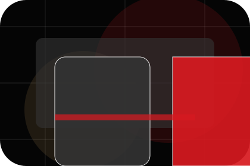
Context
Goal gives the page a specific angle instead of repeating the navigation label.
Education
Cinematic course catalogue for confidence and progress.
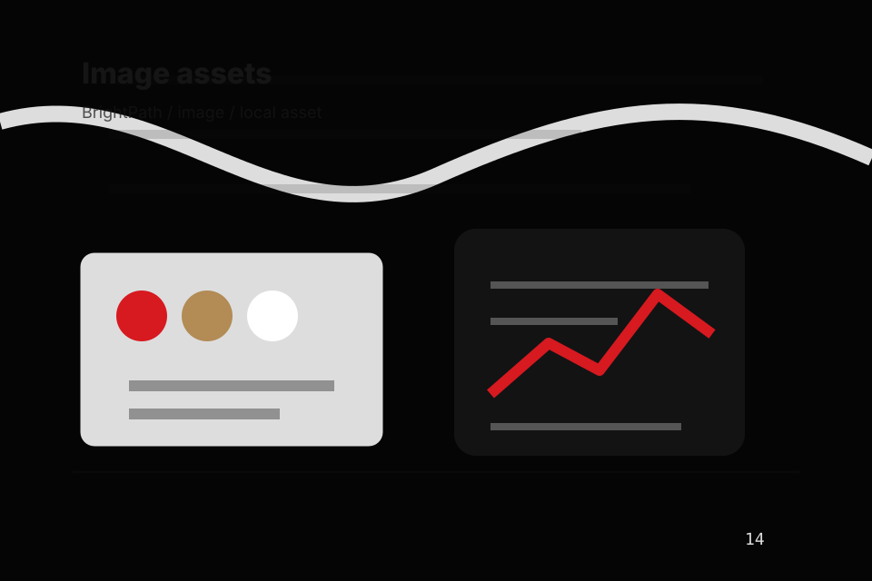
Home / 02
Goal adds care context to the home route, using the cinematic course catalogue structure to support confidence and progress before visitors choose a next step.
Bright uses lesson trailer cards and focused copy to make the decision easier to scan, aligning the section with confidence and progress rather than filling space.
Open School
Goal gives the page a specific angle instead of repeating the navigation label.
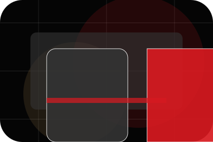
The lesson trailer cards show what to compare, what to avoid, and what matters most for education, training & learning services visitors.
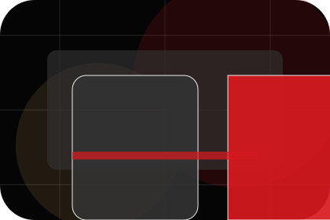
The final cue points to a useful internal route so the section keeps the journey moving.
Home / 03
Struggle adds care context to the home route, using the cinematic course catalogue structure to support confidence and progress before visitors choose a next step.
Bright uses lesson trailer cards and focused copy to make the decision easier to scan, aligning the section with confidence and progress rather than filling space.
Open CoursesBright structures struggle around context, judgment, and a clear next route so visitors can compare the block quickly before they book a trial.
Book TrialHome / 04
Promise defines the better state Bright is built to create, with enough detail to make the promise believable.
A course-led education site with cinematic hero, lesson shelves, premium teacher proof, and trial routes. The section grounds that direction in concrete benefits, visible tradeoffs, and a next route visitors can use when the promise feels relevant.
Open MethodPromise defines what becomes clearer, easier, or safer when Bright is the chosen route.
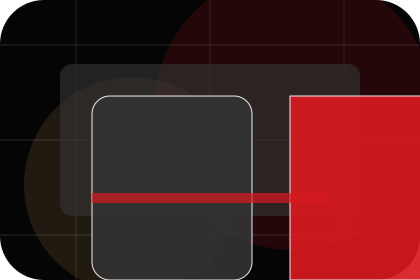
The benefit is tied to confidence and progress, not a vague quality claim.
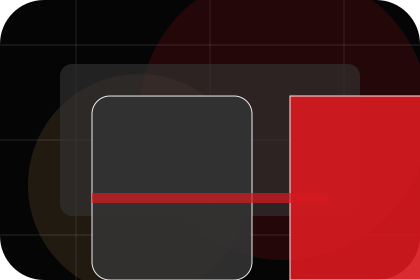
Visitors get a linked path to compare the promise against services, standards, or examples.
Home / 05
Courses explains the practical scope, best-fit situations, and expected outcome so education visitors can compare options without decoding jargon.
The section keeps the offer concrete: what is included, who it is best for, what decision it supports, and which linked route gives the deeper detail.
Open ResultsWho should use courses and when it belongs in the home journey.
Home / 06
Method adds care context to the home route, using the cinematic course catalogue structure to support confidence and progress before visitors choose a next step.
Bright uses lesson trailer cards and focused copy to make the decision easier to scan, aligning the section with confidence and progress rather than filling space.
Open PricingMethod gives the page a specific angle instead of repeating the navigation label.
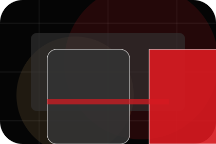
The lesson trailer cards show what to compare, what to avoid, and what matters most for education, training & learning services visitors.
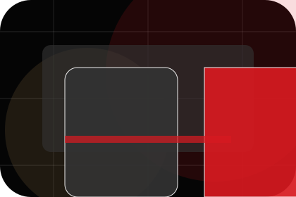
The final cue points to a useful internal route so the section keeps the journey moving.
Home / 07
Results shows what changes after the work: clearer decisions, visible progress, and proof points that connect the offer to real outcomes.
The layout connects before-and-after thinking with measured outcomes, making the result easy to scan without promising what the business cannot guarantee.
Open ResultsThe uncertainty, delay, or missed opportunity visitors bring into results.
The clearer, safer, or more valuable state Bright is designed to support.
The visible cue that connects results to a believable decision, not a loose claim.
Home / 08
Proof shows what changes after the work: clearer decisions, visible progress, and proof points that connect the offer to real outcomes.
The layout connects before-and-after thinking with measured outcomes, making the result easy to scan without promising what the business cannot guarantee.
Open ResultsThe uncertainty, delay, or missed opportunity visitors bring into proof.
The clearer, safer, or more valuable state Bright is designed to support.
The visible cue that connects proof to a believable decision, not a loose claim.
Home / 09
Questions handles buying doubts directly so visitors can understand timing, fit, limits, and the safest next step.
Answers are short by design: enough to remove hesitation, not so much that the page turns into documentation before the visitor can act.
Open Contact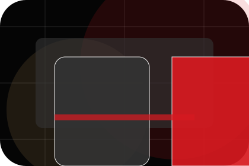
Questions gives the page a specific angle instead of repeating the navigation label.
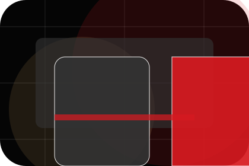
The lesson trailer cards show what to compare, what to avoid, and what matters most for education, training & learning services visitors.
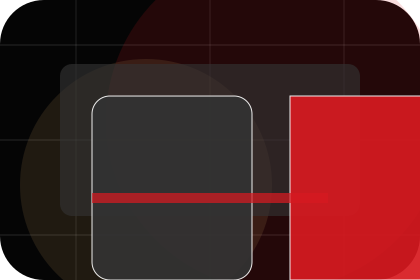
The final cue points to a useful internal route so the section keeps the journey moving.
Bright starts with a focused intake so the recommendation matches the visitor's context, risk, timing, and readiness.
Each route explains inclusions, exclusions, documents, timing, and the decision points that affect final delivery.
The theme uses cinematic course catalogue, lesson trailer cards, and level selector, course filter, timetable interaction rather than a shared template rhythm.
Black cinematic course hero
Select the closest route and Bright keeps the next step, proof, and follow-up expectation aligned with confidence and progress.
Home / 10
Bright closes the home route with a clear action, a quick reminder of the value, and a low-friction way to book a trial.
Visitors who are ready can use the primary action. Visitors who are still comparing can scan the section links, proof, and support routes before they book a trial.
Book TrialThe final block keeps the choice simple: act now, compare one more proof route, or send enough detail for a focused response.
Book Trialconfidence and progress
A course-led education site with cinematic hero, lesson shelves, premium teacher proof, and trial routes. Home ends with a direct path to book a trial, plus enough context for visitors who still need to compare.
 Book Trial
Book Trial